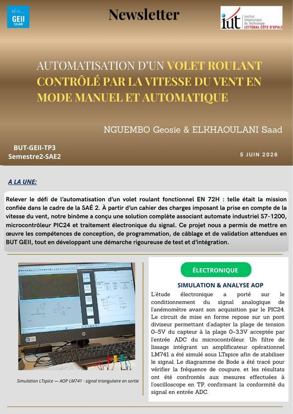

Étudiant en Automatisme & Informatique Industrielle
Futur alternant en BUT GEII, passionné par les systèmes embarqués, la programmation VHDL et les automates industriels. Je cherche une alternance pour mettre en pratique mes compétences acquises en SAÉ et contribuer à des projets industriels concrets.
Je suis Geosie Dieuriche NGUEMBO, étudiant en première année de BUT GEII à l'IUT du Littoral Côte d'Opale de Calais. D'origine congolaise, j'ai suivi une formation en génie informatique industrielle en République du Congo avant de m'installer en France pour poursuivre mes études.
Mon parcours m'a conduit vers l'automatisme et l'informatique industrielle, un domaine où la programmation, l'électronique et les systèmes de contrôle se rejoignent. Je suis particulièrement attiré par la programmation de systèmes embarqués, la conception de cartes électroniques avec KiCad, et la programmation VHDL sur FPGA.
Au cours de ma première année de BUT, j'ai réalisé deux SAÉ majeures : la conception d'un minuteur FPGA sur carte Basys3 (S1) et un système de mesure anémométrique avec PIC24F (S2), deux projets qui m'ont permis de mettre en pratique les compétences Concevoir et Vérifier du référentiel BUT GEII.
Je suis à la recherche d'une alternance pour les années BUT2 et BUT3, avec l'ambition de rejoindre une entreprise industrielle des Hauts-de-France.
Parcours académique
Expériences professionnelles
Concevoir la partie GEII d'un système. Branche descendante du cycle en V : analyse des besoins, spécification, architecture, réalisation.
SAÉ 1.01 · SAÉ 2.01Vérifier la partie GEII d'un système. Branche ascendante du cycle en V : tests, mesures, validation, compte-rendu des dysfonctionnements.
SAÉ 1.02 · SAÉ 2.01Assurer le maintien en condition opérationnelle d'un système. Diagnostic de pannes, correction, retour au fonctionnement nominal.
Travaillée dès BUT1Intégrer un système de commande et de contrôle dans un procédé industriel. Automates, supervision, IHM, réseaux industriels.
BUT2 & BUT3Dans le cadre de la SAÉ du semestre 1, nous avons reçu pour mission de concevoir et réaliser un minuteur électronique destiné à la cuisson des œufs, implanté sur une carte FPGA Basys3. Le cahier des charges imposait : une sélection du temps par boutons poussoirs, un affichage visuel du temps restant par un arc de 11 LEDs (6 rouges + 5 vertes), un temps initial de 3 minutes, un ajout de temps par pas de 15 secondes, et un clignotement des LEDs avec buzzer en fin de cycle.
🎬 Démonstration du minuteur FPGA — affichage progressif des 11 LEDs, buzzer et clignotement en fin de décompte sur carte Basys3
Ce projet m'a permis de maîtriser la programmation VHDL modulaire sur FPGA et de comprendre toute la chaîne de conception électronique, de la spécification à la fabrication physique. J'ai développé ma rigueur dans la gestion de projet (planning Gantt sur 5 semaines) et ma persévérance face aux difficultés techniques rencontrées. La réalisation d'une carte PCB fonctionnelle fabriquée à l'IUT a été une grande fierté.
L'objectif de cette SAÉ était de réaliser un système de mesure anémométrique permettant de piloter un volet roulant en fonction de la vitesse du vent. Le capteur anémomètre SEN0170 fournit une tension entre 0 et 5 V (0 à 30 m/s) lue par le PIC24FJ128GA010 via son convertisseur analogique-numérique (CAN). Le microcontrôleur calcule la vitesse du vent, l'affiche sur un écran LCD, puis envoie les ordres de montée (M) et descente (D) vers un automate programmable industriel (API) qui commande le volet roulant.
🎬 Démonstration du volet roulant — capteur SEN0170 → PIC24F → API S7-1200 → moteur (modes manuel & automatique)
Cette SAÉ m'a permis de relier l'informatique embarquée (PIC24F + MPLAB), l'automatisme (API sous TIA Portal) et le câblage industriel réel d'un volet roulant. J'ai renforcé ma compréhension de la chaîne complète capteur → traitement → actionneur et j'ai progressé en recherche de pannes (câblage KM1, tests de continuité, utilisation du schéma QElectroTech). Ce projet illustre concrètement les compétences Concevoir (C1) et Vérifier (C2) du BUT GEII.
Application de la loi d'Ohm (U = R × I), lois des mailles et des nœuds. Dimensionnement de résistances, mesures au multimètre, comparaison valeurs théoriques / expérimentales. Utilisation de l'oscilloscope pour analyser des signaux analogiques et numériques.
Identification et caractérisation de résistances, condensateurs, diodes et transistors. Lecture des datasheets, mesures de caractéristiques, justification des choix de composants dans un circuit.
Conception de modules VHDL : compteurs, additionneurs, bascules. Écriture de testbenchs, génération de chronogrammes de simulation. Compréhension de la description comportementale vs structurelle.
Réalisation de montages sur platine d'essai et PCB. Câblage, vérification des connexions avant mise sous tension, respect des consignes de sécurité électrique, utilisation des EPI. Test et validation fonctionnelle des montages.
Réalisation de TP en automatisme avec le logiciel TIA Portal : création de Grafcet, langage Ladder, mise en place de séquences de commande pour des systèmes industriels. Utilisation de MPLAB pour la programmation en C de microcontrôleurs PIC, tests de simulation, débogage, et validation des échanges entre API et systèmes embarqués.
Je vise le parcours AII de l'IUT de Calais car il correspond exactement à mes centres d'intérêt : programmer des automates industriels, intégrer des systèmes de commande et de contrôle, travailler sur la robotique et la supervision HMI.
Ce parcours couvre l'automatisme spécialisé, les réseaux industriels, la robotique appliquée, la supervision et l'Interface Homme-Machine (IHM), l'informatique industrielle avancée et l'IoT industriel.
Je cherche une alternance pour BUT2 et BUT3 dans la région Hauts-de-France, idéalement dans une entreprise du secteur industriel ou automobile.
Dans le cadre du PPP, nous avons aussi réalisé plusieurs projets comme la création de posters et de newsletters. Ces activités m'ont appris à : résumer plusieurs jours de travail sur un support visuel clair, présenter un projet de façon synthétique, et planifier un programme pour atteindre un objectif précis en entreprise.

Newsletter NGUEMBO & ELKHAOULANI — automatisation d'un volet roulant contrôlé par la vitesse du vent · Cliquer l'image pour télécharger le PDF complet
Mon niveau d'anglais est niveau A2. Dans le cadre de la ressource Anglais du semestre 2, nous avons réalisé une vidéo en anglais portant sur la sécurité autour des API et des installations électriques. L'objectif était de rappeler qu'un technicien ne peut pas intervenir sur une zone où le courant est présent sans respecter les règles de sécurité : port des EPI (chaussures de sécurité, lunettes, gants), vérification de l'absence de tension, respect des procédures et balisage de la zone.
Cette vidéo en anglais nous a permis de prendre conscience de la gravité des risques électriques autant en entreprise que dans les salles de travaux pratiques à l'IUT. Elle m'a aidé à développer un vocabulaire simple mais précis sur la sécurité (electrical safety, protective equipment, risk, voltage, circuit, lockout/tagout) et à m'exprimer à l'oral dans un contexte professionnel.
🎬 Safety around PLCs & electrical installations — vidéo réalisée en anglais (niveau A2) sur les règles de sécurité électrique et le port des EPI
Je suis disponible pour discuter d'une opportunité d'alternance BUT2 & BUT3 (2026–2028) dans les Hauts-de-France. N'hésitez pas à me contacter par email ou téléphone.